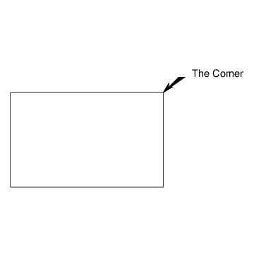

| Object: LABEL (The :GEOM-BASE Package) |
| Mixins: OUTLINE-SPECIALIZATION-MIXIN, BASE-OBJECT |
| Input Slots (required) | |
| LEADER-PATH list of 3d points | |
List making up leader line, starting from where the arrowhead normally is. | |
| Input Slots (optional) | |
| ARROWHEAD-LENGTH length (from tip to tail) of arrowhead glyph | |
Defaults to twice the arrowhead-width | |
| ARROWHEAD-STYLE keyword symbol | |
Style for arrowhead at start of leader-path. Currently supported values are :none, :wedge (the Default), and :double-wedge. | |
| ARROWHEAD-STYLE-2 keyword symbol | |
Style for arrowhead on end of leader-path. Currently supported values are :none (the Default), :wedge, and :double-wedge. | |
| ARROWHEAD-WIDTH width of arrowhead glyph | |
Defaults to five times the line thickness (2.5) | |
| BOUNDING-BOX [from BASE-OBJECT] list of two 3d points | |
The left front bottom and right rear top corners, in global coordinates, of the rectangular volume bounding the tree of geometric objects rooted at this object. | |
| CHARACTER-SIZE number | |
Size (glyph height) of the label text, in model units. Defaults to 10. | |
| DXF-FONT string | |
This names the DXF font for this general-note. Defaults to (the font). | |
| DXF-OFFSET number | |
The start of text will be offset by this amount for DXF output. Default is 2. | |
| DXF-SIZE-RATIO number | |
The scale factor for DXF character size vs PDF character size. Default is 0.8 | |
| DXF-TEXT-X-SCALE number in percentage | |
Adjusts the character width for DXF output. Defaults to the text-x-scale. | |
| FONT string naming a standard pdf font | |
Font for the label text. Defaults to "Helvetica" | |
| HIDDEN? [from VANILLA-MIXIN*] boolean | |
Indicates whether the object should effectively be a hidden-object even if specified in :objects. Default is nil. | |
| IMAGE-FILE [from BASE-OBJECT] pathname or string | |
Points to a pre-existing image file to be displayed instead of actual geometry for this object. Defaults to nil | |
| OBLIQUENESS [from BASE-OBJECT] 3x3 orthonormal matrix of double-float numbers | |
This is synonymous with the orientation. | |
| ONCLICK-FUNCTION [from BASE-OBJECT] lambda function of zero arguments, or nil | |
If non-nil, this function gets invoked when the user clicks the object in graphics front-ends which support this functionality, e.g. SVG/Raphael and X3DOM. | |
| OUTLINE-SHAPE-TYPE keyword symbol | |
Indicates shape of outline enclosing the text. Currently :none, :bubble, :rectangle, and nil are supported. The default is nil | |
| ROOT [from VANILLA-MIXIN*] gdl instance | |
The root-level node in this object's ``tree'' (instance hierarchy). | |
| SAFE-CHILDREN [from VANILLA-MIXIN*] list of gdl instances | |
All objects from the :objects specification, including elements of sequences as flat lists. Any children which throw errors come back as a plist with error information | |
| STRINGS list of strings | |
Text lines to be displayed as the label. Specify this or text, not both. | |
| STRINGS-FOR-DISPLAY [from VANILLA-MIXIN*] string or list of strings | |
Determines how the name of objects of this type will be printed in most places. This defaults to the name-for-display (generally the part's name as specified in its parent), followed by an index number if the part is an element of a sequence. | |
| TEXT string | |
Text to be displayed as the label | |
| TEXT-GAP number | |
Amount of space between last point in leader-path and beginning of the label text. Defaults to the width of the letter "A" in the specified font and character-size. | |
| TEXT-SIDE keyword symbol, either :left or :right | |
Determines whether the label text sits to the right or the left of the last point in the leader-path. The default is computed based on the direction of the last segment of the leader-path. | |
| VIEW-REFERENCE-OBJECT gdl object or nil | |
View object which will use this dimension. Defaults to NIL. | |
| VISIBLE-CHILDREN [from VANILLA-MIXIN*] list of gdl instances | |
Additional objects to display in Tatu tree. Typically this would be a subset of hidden-children. Defaults to NIL. | |
| Input Slots (optional, defaulting) | |
| CENTER [from BASE-OBJECT] 3d point | |
Indicates in global coordinates where the center of the reference box of this object should be located. | |
| DISPLAY-CONTROLS [from BASE-OBJECT] plist | |
May contain keywords and values indicating display characteristics for this object. The following keywords are recognized currently:
| |
| HEIGHT [from BASE-OBJECT] number | |
Z-axis dimension of the reference box. Defaults to zero. | |
| LENGTH [from BASE-OBJECT] number | |
Y-axis dimension of the reference box. Defaults to zero. | |
| WIDTH [from BASE-OBJECT] number | |
X-axis dimension of the reference box. Defaults to zero. | |
| Computed Slots | |
| ORIENTATION [from BASE-OBJECT] 3x3 matrix of double-float numbers | |
Indicates the absolute Rotation Matrix used to create the coordinate system of this object. This matrix is given in absolute terms (i.e. with respect to the root's orientation), and is generally created with the alignment function. It should be an orthonormal matrix, meaning each row is a vector with a magnitude of one (1.0). | |
(in-package :gdl-user)
(define-object label-sample (base-object)
:objects
((box :type 'box
:length 10 :width (* (the-child length) +phi+)
:height (* (the-child :width) +phi+))
(corner-label :type 'label
:leader-path (let ((start (the box (vertex :top :right :rear))))
(list start
(translate start :right (/ (the box width) 10)
:rear (/ (the box width) 10))
(translate start :right (/ (the box width) 7)
:rear (/ (the box width) 10))))
:text "The Corner"
:character-size (/ (the box width) 15))))
(generate-sample-drawing :object-roots (make-object 'label-sample))
|  |